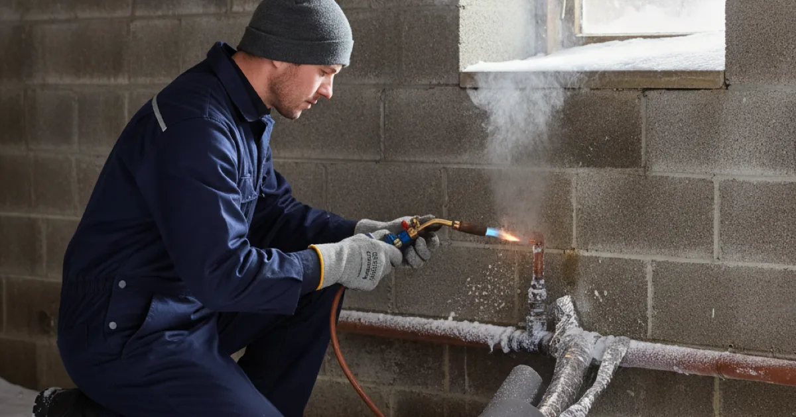

Frozen Pipe Repair in Westchester County, NY
A frozen pipe has not necessarily burst yet — and what you do while it is still frozen decides whether it does. Here is how to handle it.
- Licensed & Insured
- Same-Day Service Available
- Emergency Plumbing Available
- 15+ Years of Experience

If a pipe is frozen right now
A frozen pipe is a warning, not yet a disaster. The danger is the pressure building between the ice and a closed tap, which is what actually splits the pipe. Relieving that pressure is the priority.
- Open the tap that pipe feeds. A little. This gives melting ice somewhere to go and relieves the building pressure. If nothing comes out, it is still frozen — leave the tap open.
- Find the frozen section. Usually the coldest run — an exterior wall, an unheated garage, a crawlspace. Frost on the pipe or a total lack of flow points to it.
- Warm it gently. A hairdryer, a heat lamp, or towels soaked in hot water, working from the tap end back toward the frozen part so meltwater can escape.
- Never use an open flame. No blowtorch, no propane heater against the pipe. It is the most common way a frozen-pipe problem becomes a house fire.
- Know where your main shut-off is in case the pipe has already split and water appears when it thaws.
If you cannot reach the frozen section, or it thaws into a leak, that is when to call. A split from freezing is often not obvious until the water moves again, which is the direct overlap with pipes that split from freezing.
Where they freeze around here
Our winters are cold enough that this is a routine seasonal call, and the same locations come up again and again.
- Exterior walls. Pipes run through poorly insulated outside walls are the classic casualty, especially where a cold snap follows a mild spell and nobody was thinking about it.
- Unheated garages and crawlspaces. Any plumbing in a space without heat is exposed, and attached garages catch people out because the house feels warm.
- Outside taps and hose bibs. Not drained before winter, these freeze and can split back into the wall where you do not see it until spring.
- Basements near foundation vents or draughty rim joists, where cold air pools around otherwise sheltered pipe.
- Vacant or lightly used rooms where heat is turned down to save money, leaving the pipes in them below the margin.
Preventing it next winter
Nearly all of it is cheap and simple, and it is worth doing in autumn rather than remembering in January.
- Insulate exposed pipe in unheated spaces with foam sleeves. Inexpensive and effective.
- Drain and shut off outside taps before the first hard freeze.
- Seal draughts near pipe runs — rim joists, foundation vents, gaps where pipe passes through a wall.
- Keep some heat in rooms with plumbing on exterior walls, even unused ones.
- On the coldest nights, let a tap trickle. Moving water is far harder to freeze, and the cost is trivial against a burst.
- Open cabinet doors under sinks on exterior walls so household heat reaches the pipes.
This Old House has a concise guide to preventing and thawing frozen pipes worth keeping handy through the winter. If a freeze has already caused a split, that becomes water damage repairs we handle on the plumbing side, and we will tell you plainly where the plumbing job ends and drying begins.
How we thaw and repair it
When we arrive at a frozen pipe that has not yet burst, the goal is a controlled thaw and a proper check. We warm the frozen section gradually, watch for the split that freezing often causes, and pressure-test the line once it is flowing again.
If it has already burst, we shut the water, repair or replace the failed section back to sound pipe, and support it so the repair is not under strain. Then we look at why that spot froze, because a pipe that froze once will do it again unless the cause is addressed.
What affects the cost
We price the repair before starting, and a frozen-pipe job splits into two very different situations. A pipe caught frozen but intact is often just a thaw and a check. A pipe that has split needs the failed section repaired and, sometimes, the surrounding run assessed.
The bigger cost is usually access rather than the pipe: reaching a split inside an exterior wall or under a floor is what takes the time. Insulation added afterwards is cheap and worth doing while we are already there.
Common questions
How do I know if a frozen pipe has burst?
You often will not until it thaws. If a section was frozen, keep the shut-off accessible and watch closely as it warms. Water appearing as flow returns means it split, and the supply needs shutting off immediately.
Should I leave the heat on when away in winter?
Yes. Set it no lower than around 55°F rather than off. The saving from turning it off is nothing against a burst pipe discovered days later, and some insurers expect a minimum temperature to be maintained.
My pipes froze once. Will it keep happening?
In the same spot, yes, unless the cause is addressed — insulation, a draught, or an unheated space. A pipe that froze once has told you where it is vulnerable.
Can I thaw it myself?
Gently, yes, with a hairdryer or warm towels and the tap open. Never with a flame. If you cannot reach it, or it has already split, call rather than forcing it.
Are outside taps worth worrying about?
Very much. A hose bib left connected over winter is one of the most common freeze splits, and because it fails back inside the wall, the damage is often hidden until spring.
Catch it before it splits
Licensed, insured, and used to a Westchester winter.